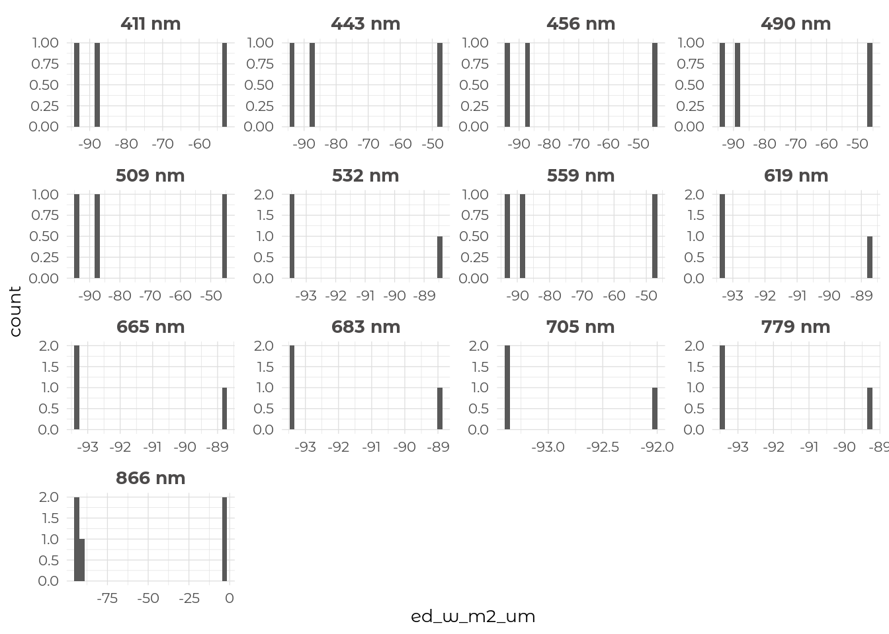
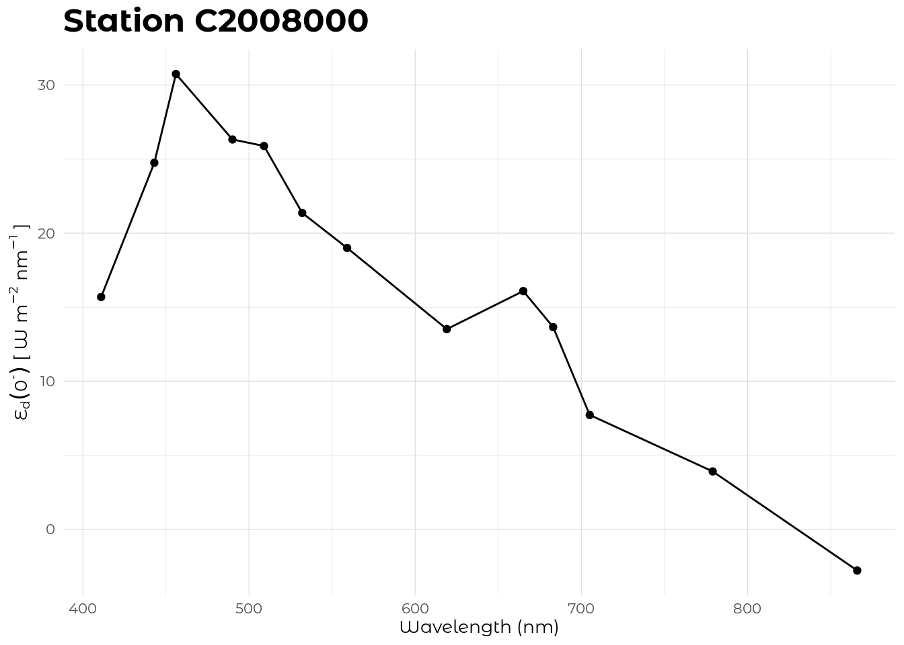
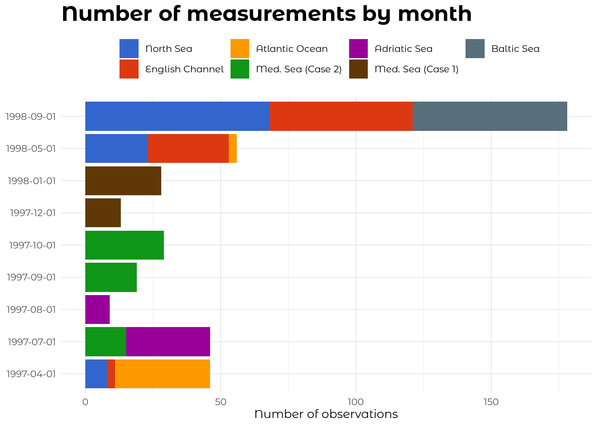
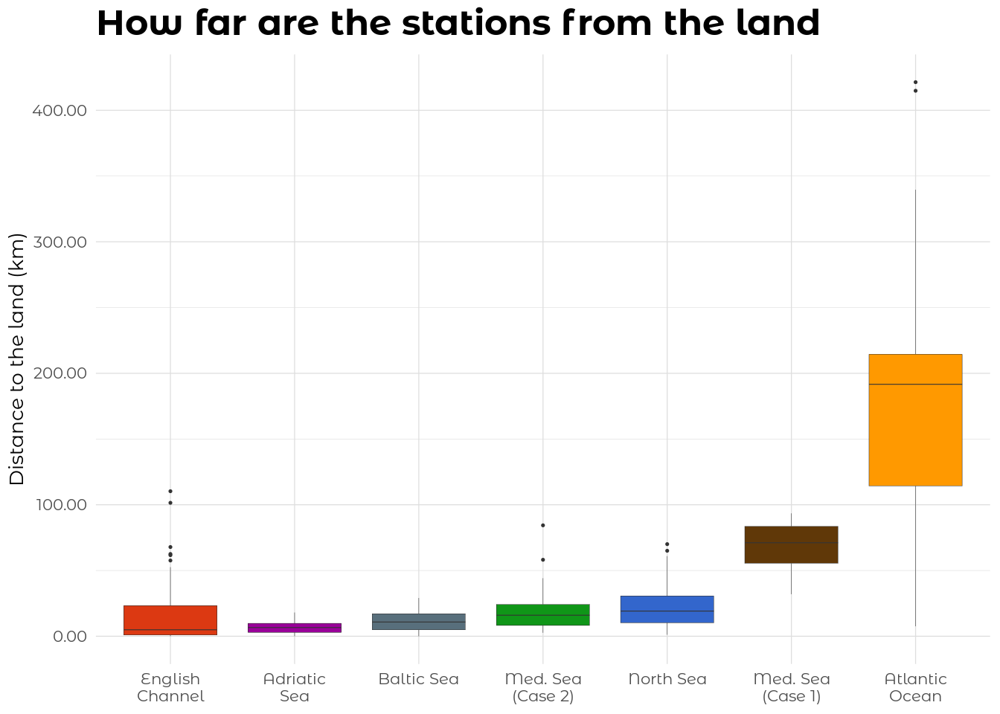
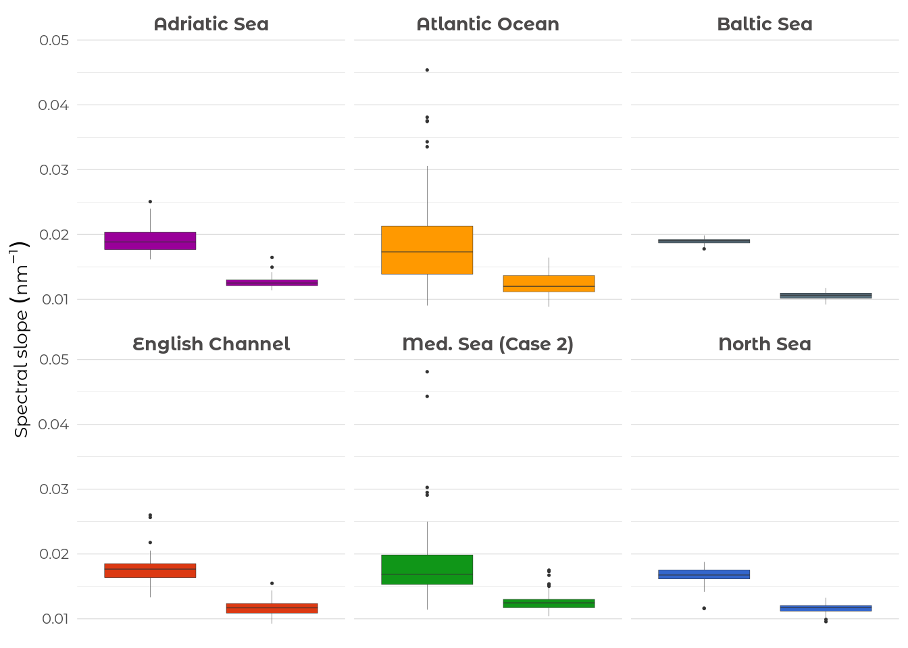
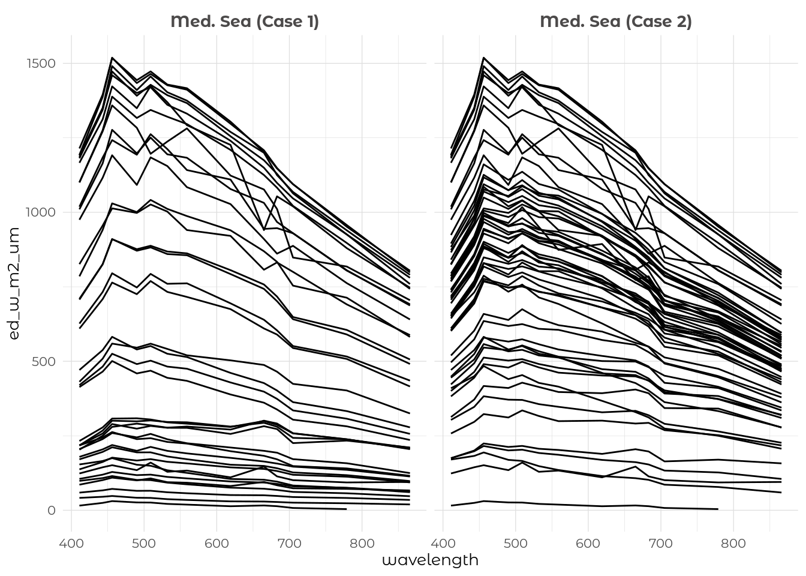

Untitled
Data cleaning and pre-processing
This section shows the main steps that have been applied to pre-process the raw data.
aCDOM spectra
The CDOM spectra were modelled according to the information in @Babin2003.
acdomspectra were re-fitted using the complete data (i.e. between 350-500 nm) because the data inall_abs_transpose.txtstarted at 380 nm.
Average background values calculated between 683-687 nm and subtracted from each spectrum.
Some files were in binary format, so I could not open them (ex.:
C2001000.YSA).Some spectra start at 300 nm while others at 350 nm.
Calculated the correlation between the measured and the fitted values.
- Fits with R2 lower than 0.95 were removed from the data.
Absorption spectra with any negative values below 500 nm were removed.
Exported the complete spectra (350-700 nm): both the raw and the modelled data.
Phytoplankton and non-algal absorption
- Absorption spectra with any negative values below 500 nm were removed.
Irradiance
- There were negative values in the irradiance data (
Ed,Eu,Kd,Ku). I have cleaned the data by setting these negative values toNA.
This graph shows the number of negative values for Ed by wavelength.
- Example of a spectral profile with negative values.

Euis in factEu0-that was estimated using a two-exponential function model.Edis in factEd0-calculated from0.94 x ed0+.There are differences in wavelengths among cruises. I have not found any information in the report concerning channel change across the missions.
| A2 | C1 | C2 | C3 | C4 | C5 | C6 |
|---|---|---|---|---|---|---|
| 411 | 411 | 411 | 411 | 411 | 411 | 411 |
| 443 | 443 | 443 | 443 | 443 | 443 | 443 |
| 456 | 456 | 456 | 456 | 456 | 456 | 456 |
| 490 | 490 | 490 | 490 | 490 | 490 | 490 |
| 509 | 509 | 509 | 509 | 509 | 509 | 509 |
| 532 | 532 | 532 | 532 | 532 | 532 | 532 |
| 559 | 556 | 559 | 559 | 559 | 559 | 559 |
| 619 | 590 | 619 | 619 | 619 | 619 | 619 |
| 665 | 665 | 665 | 665 | 665 | 665 | 665 |
| 683 | 683 | 683 | 683 | 683 | 683 | 683 |
| 705 | 705 | 705 | 705 | 705 | 705 | 705 |
| 779 | 779 | 779 | 779 | 779 | 779 | 779 |
| 866 | 866 | 866 | 866 | 866 | 866 | 866 |
| A2 | C1 | C2 | C3 | C4 | C5 | C6 |
|---|---|---|---|---|---|---|
| 559 | 556 | 559 | 559 | 559 | 559 | 559 |
| 619 | 590 | 619 | 619 | 619 | 619 | 619 |
Reflectance
- Reflectance values outside the 0-1 range were set to
NA.
AC9
Negative values in
a,c,bp,a_dissolvedandc_dissolvedhave been set toNA.a(715)was used as the baseline, that is why the values are always at 0 (see next graph).

Other stuff
- Extracted extra variables (
DOC,AQY) from Massimo 2000.
Data sampling
Just some graphs to visualize the data. Note that the same colour palette will be used to represent the areas in all graphics.
Temporal sampling
This graph shows when the sampling was performed in the different areas. For instance, we can see that a large fraction of the measurements were made in September of 1998.

Bathymetry
I have extracted the bathymetry at each sampling locations. This boxplot provide a general picture of the bathymetry per area. Data from https://download.gebco.net/.

Land-to-sea gradient
We could also present the data in relation with its distance to the land to get an overview of the landscape on optical quantities. For instance, acdom will likely be higher for stations located close to the shore because of the terrestrial influence.

Available variables
This graph shows an overview of the available variables (excluding radiometric measurements).

Absorption measurements
Overview of the averaged absorption spectra for each area.

Comparing acdom443 for the different areas shows that there is a clear open to coastal gradient.

We can see that the DOC follows the same pattern as acdom443.

We can also use scatter plots to further explore the relationships among variables.

aphy

We could also assess the goodness of the relationships between total chlorophyll-a and phytoplankton absorption for each region.

anap

ap

acdom

Absorption partition
In this section I am using the same three stations as in @oubelkheir2007 to explore the additive contributions of each type of absorption.
For station
C6024000,a_pis lower thana_cdomaround 400 nm and 550 nm. Should we use this to filter out problematic spectra?There are some obvious problems with
a_cdommeasurements. SeeC6024000where there is a bump in absorption around 550 nm.

Spectral slopes
This graph compares the spectral slopes of both CDOM and NAP absorption spectra.

Irradiance
Ed

Eu

Kd

Ku

Reflectance

AC9
Absorption

Beam attenuation

Scattering

Orientation of the paper
The data is a mix of temporal and spatial observations, so how should we present the data?
- By
area?
- By
Journal candidates
- Scientific data (I.F: 5.541)
- Earth System Science Data (ESSD) (I.F: 9.197)
- PLOS One (I.F: 2.740)
Figures for the paper
This section shows the figures that I think should be included in the data paper.
Figure 1
Figure 1: Map of the sampling stations.

Figure 2
Figure 2: (A) Overview of the temporal sampling for the seven areas. The numbers in the circles indicate the number of visited stations each month. (B) Boxplot showing the bathymetry at the sampling locations by area.

Figure 3
Figure 3: (A) Total chlorophyll-a and (B) particulate organic carbon across the sampled areas.
- Is it normal there is no data for
Med. Sea (Case 1)?

Figure 4
Figure 4: (A) Average total particulate (\(a_\text{p}\)), (B) non-algal (\(a_\text{NAP}\)), (C) phytoplankton (\(a_{\phi}\)) and (D) chromophoric dissolved organic matter (\(a_\text{CDOM}\)) absorption spectra in each area. (E) \(a_\text{CDOM}(350)\) along the westernmost transect in the North Sea (see Fig. 1B).
- Is it normal there is no data for
Med. Sea (Case 1)?

Figure 5
Figure 5: (A) Particulate scattering coefficient at 440 nm (\(b_{b}(440)\)) and (B) attenuation coefficient for downward irradiance at 443 nm (\(K_{d}(443)\)) across the sampled areas.

Figure 6
Figure 6: Spectra of downward irradiance measured at the surface across the sampled areas. The tick lines represent the average spectra.
- Dot not forget to find out why there are duplicated spectra in Med. Sea.

Figure 7
Scatterplots showing relationships among different selected variables. (A) Particulate organic carbon (POC) and (B) phytoplankton absorption at 443 nm (\(a_{\phi}(443)\)) against total chlorophyll-a. (C) Downward irradiance at 443 nm (\(E_{d}(443)\)) and (D) particulate scattering at 440 nm (\(b_{b}(440)\) against particulate organic carbon. The red lines show the linear relationships between the variables. The shaded gray areas represent the 95% confidence intervals around the fitted models.

Done
Calculate
s_napands_cdom. See the method in @Babin2003 where he removes some wavelengths to calculates_nap.Removed dissolved
aandcfrom the AC9 data because there were problems with the filtering procedure during the sampling.Extract bathymetry at each station.
Zoom on geographic areas in Fig. 1 such as figure 13 in the final report.
Wait for Frank to correct the bug with the mrg file where the data columns are not aligned correctly.
Recode Ed wavelengths from the SPMR vertical profiles as:
- 412 -> 411
- 510 -> 509
- 589 -> 590
- 666 -> 665
- 780 -> 779
Todos
No absorption for
Med. Sea (Case 1). Is it normal?There are a lot of nutrient parameters that have values of zero. Are they true zero or they indicate missing values?
There are wavelength gaps in the
AC9,irradianceandreflectancedata. Is that normal?Add units to each variable. For example
depthshould becomesdepth_m.Some geographical positions are located on land (Adriatic Sea for example).
There are duplicated Ed spectra in the data.

These are the duplicated Ed stations.
This is the same for Eu.
There are only two AC9 measurements in the Adriadic Sea. Is it normal?
Add graphics for the section 4.1.3 Apparent optical properties (AOPs).